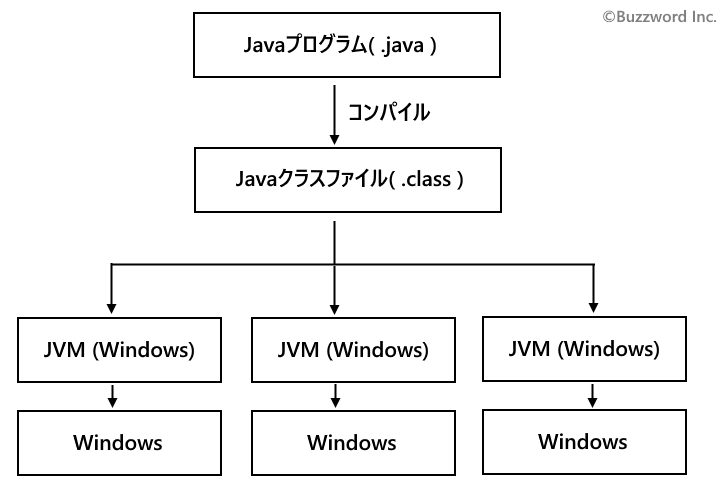
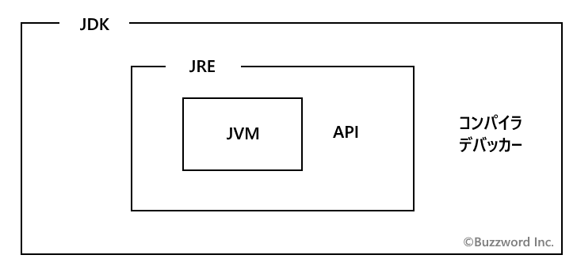
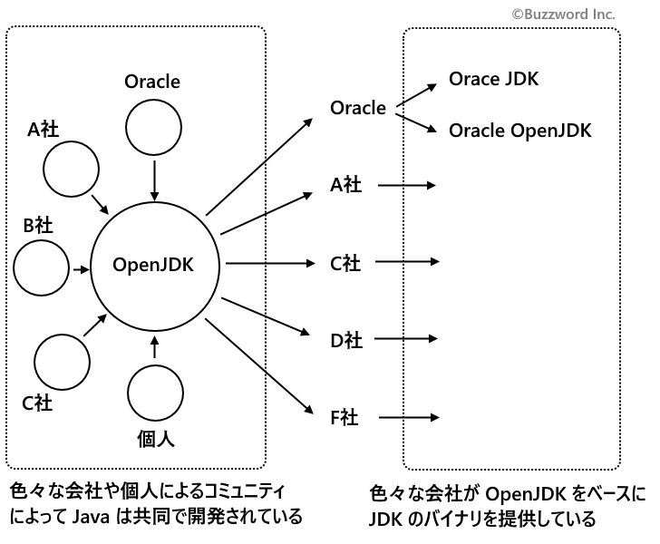

Java SEとJDK、JRE、JVMの違いに関する解説
Java を使った開発を行う上で Java SE 、 JDK 、 JRE 、 JVM など似たような言葉がいくつか出てきて最初は混乱することもあると思います。ここではそれぞれの語句の違いとどのような時に使われるものなのかを解説します。またあわせて Java の有償化に関する解説も少し行います。
Java SEとは
Java SE とは Java Platform, Standard Edition の略で、 Java で使用される API をまとめたものです。 API とは Application Programming Interface の略で、 この場合は Java の機能やデータなどを利用するための呼び出し方を定義したものと考えてください。
Java で提供されている API は非常に多いのですが、 Java SE はその中でも基本となる API をまとめたものとなり、 例えば java.lang.String クラスなどが含まれます。
Java SE は定期的にバージョンアップされています。 どのバージョンの Java SE なのかが分かるようにバージョンを表す番号を合わせて記述します。例えば Java SE 8 とか Java SE 13 とかです。
Java SEとJava EEやJava MEとの違い
Java SE は Java の基本となる APIを まとめたもので、デスクトップアプリケーションなどを開発する場合などは Java SE だけでもいい場合が多いのですが、企業のシステムなどより大規模な開発を行う場合には Java EE を合わせて利用します。 Java EE とは Java Platform, Enterprise Edition の略で大規模なシステムを開発する場合に必要となる API が含まれます。
Java EE は Java SE の拡張機能という位置づけになるので Java EE を使用する場合には Java SE と合わせて使用することになります。
Java EE は 2017 年に Oracle から Eclipse Foundation に移管されました。今後は名称も Java EE から Jakarta EE という名前に変更となります。
他にも家電などの組み込み機器やモバイルデバイスで動作するアプリケーションを開発するために使用する API がまとめられた Java ME があります。 Java ME とは Java Platform, Micro Edition の略です。
この Java SE、 Java EE(Jakarta EE)、 Java ME の3つを目的に応じて使っていくことになります。
JVMとは
JVM とは Java Virtual Machine の略で Java で作成されたアプリケーションを Windows や Mac OS などで動かすために必要となるアプリケーションです。 Java 仮想マシンなどとも呼ばれます。
例えば C 言語などで作成したプログラムの場合、コンパイルして出力されたバイトコードはそれぞれの OS で実行できるように OS 毎に異なる実行ファイルが出力されます。作成された実行ファイルは単独で実行することができます。
それに対して Java で作成したプログラムをコンパイルすると中間コードと呼ばれる Java クラスファイルを出力します。 Java クラスファイルはどのOS上でコンパイルしても同じものが生成されます。 Java クラスファイルは単独では実行することができず、 実行したい OS にインストールされている JVM 上で実行されます。 Java クラスファイルが OS に関わらず共通なのに、それぞれの OS で問題なく動さするのはそれぞれの OS 用の JVM が Java クラスファイルを対象の OS で動作するように変換して実行してくれるからです。

このように JVM が動作する OS 上であればどの OS 上でも同じ Java で作成したアプリケーションを実行することができますが、 Java アプリケーションを実行するには、実行する PC 上で事前に JVM がインストールされている必要があります。
JREとは
JRE とは Java Runtime Environment の略で Java のプログラムを実行するためのセットとなっています。 Java 実行環境とか Java ランタイムなどと呼ばれます。 JRE には先に解説した JVM や対応する API がセットになっています。
Java で作成されたアプリケーションは JVM 上で実行されますが、実際には JRE を各 OS にインストールすることで Java アプリケーションが実行できる環境が構築できます。 JRE は対応する Java SE のバージョンに合わせて、バージョン番号が付けられます。例えば JRE 8 とか JRE 13 とかです。
なお以前は JRE だけを単独でインストールすることが可能でしたが、 2019年12月 現在では JRE は単独で配布されておらずこのあと解説する JDK をインストールする必要があります。
JDKとは
JDK とは Java Development Kit の略で Java のプログラムの開発や実行を行うためのプログラムのセットとなっています。 Java 開発環境などと呼ばれます。先に解説した JRE の他に、 Java で記述されたプログラムをコンパイルするためのプログラムやデバッグするためのプログラムなどが含まれ、 JDK をインストールすることで Java を使ったアプリケーションの作成や作成したアプリケーションの実行まで一通り行うことができます。
JDK は対応する Java SE のバージョンに合わせてバージョン番号が付けられます。例えば JDK 8 とか JDK 13 とかです。
Java 仮想マシンである JVM 、 Java 実行環境の JRE 、 Java 開発環境の JDK 、のそれぞれの関係と違いについてはざっくりと図にすると下記のようになります。

JDK 9以降のJDKの選び方と有償化について
Oracle 社は 2017年9月 に JDK の新しいリリース・モデルおよび提供ライセンスについて発表しました(参照：JDKの新しいリリース・モデル および提供ライセンスについて)。
また Oracle 社は 2019年4月 にライセンスを変更し、 Oracle JDK は個人利用・開発目的以外の場合は有償でのライセンス契約が必要となったということです(参照：「Oracle Java」のライセンスが変更 ～無償利用は個人での開発・テスト・デモ目的のみに)。
このように Oracle JDK を商用で使用する場合は何らかの有償での契約が必要となります。
では商用で JDK を利用したい場合には必ず有償しかないというわけではありません。現在 Java の開発は OpenJDK プロジェクトとして Oracle 社や SAP社、 Red Hat社、 Google 社など複数の会社や個人によって行われています。そして OpenJDK のソースコードを元に各社がバイナリを提供しています。

Oracle 社も OpenJDK をベースに Oracle JDK を提供すると同時に、商用でも無償で利用可能な OpenJDK のバイナリを提供しています。以前は Oracle JDK でしかなかった機能は順次 OpenJDK に移されているため機能的な差異はなくなってきています。
注意点としてサポートの期間があります。例えば Oracle 社が提供している OpenJDK のバイナリは は今後 6 ヶ月 に 1 回、決められた月にアップデートが行われますが、 サポートが提供されるのは新しい OpenJDK のバイナリが出るまでの間だけのため、サポートを受け続けるには 6 ヶ月ごとに新しい OpenJDK が出るたびに最新版に更新していかなければなりません。それに対して Oracle JDK お場合は LTS(Long Term Support) 版が 3 年に 1 回提供され、同じバージョンの JDK で長期間に渡る(有償での)サポートを受けることができます。
どの JDK を利用するのかについて、 Oracle 社が提供するものであれば長期サポートが必要であれば Oracle JDK 、長期サポートが必要なく商用でも無償で利用したい場合には Oracle OpenJDK となります。また先に記載した通り OpenJDK のバイナリは Oracle 社だけではなく Red Hat 社や Amazon 社などからも提供されていますので、ご利用目的に合うとこを探してみてください。
-- --
Java SE や Java EE 、 Java ME、 JDK 、 JRE 、 JVM などの違いについて解説しました。
( Written by Tatsuo Ikura )

著者 / TATSUO IKURA
初心者～中級者の方を対象としたプログラミング方法や開発環境の構築の解説を行うサイトの運営を行っています。